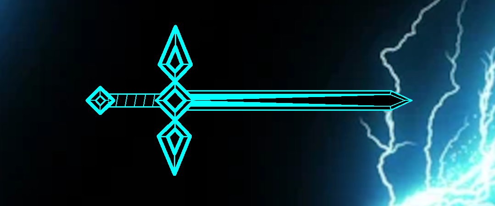
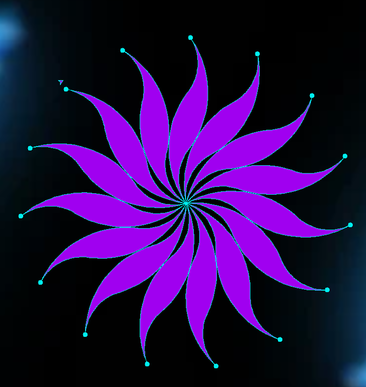

What Ive Done
Assignments:
System Settups:
Over the past year we have set up many operating systems and servers. First we started off by setting up our base pc's running them on debian and putting an apache server on it. After doing that we moved onto setting up rasberrypies. about half way through the year we started setting up windows vms then later settup IIS servers then shutt them down to run Nginx servers and settup python servers and while we did that I took some time to settup a retro pie. While we did all of these over the course of the year we spent time setting up websites on all of these servers and I learned how to settup cisco packet tracer servers.
Projects:
Arduino:
We Started Off prgraming a singular neopixel led light and how to set its colors with an arduino then moved on to programing led rings with neopixel to make cool patterns.
Rasberrypie:
On the rasberrypies the first project we did was on minecraft pi edition where we figured out how to spawn in blocks and people made different structures and a couple people like me made pixel art. We also had to set up scripts with loops so they would do things like build bridges as we walked or remove the ground where we flew or woud cause snow to spawn underneath out feet.
Retropie:
Near the end of this year Axel and I settup a retropie which is a reasberrypie that runs on a secial os made to specifically run different roms and emulators for old consol games.
Python:
First in python we learned how to program some scripts and use it to solve math equations and such and later on we used it to run turtle code so we could make some cool drawings with it my favorites we the flower and the sword that I made.

